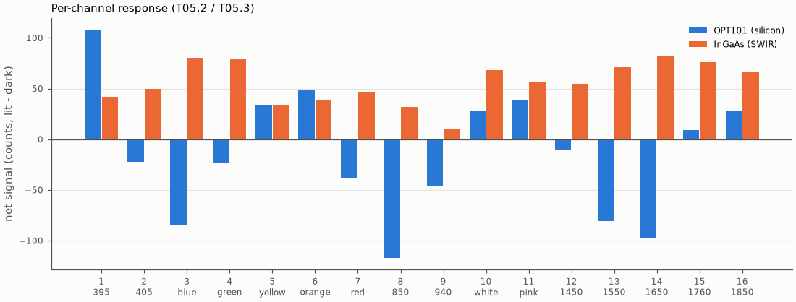
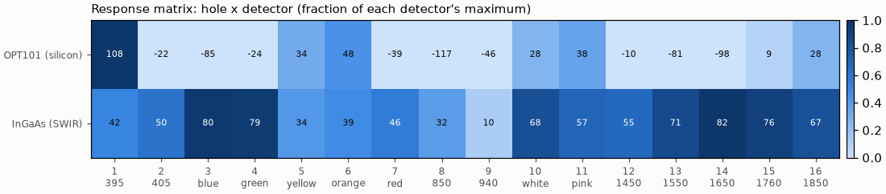
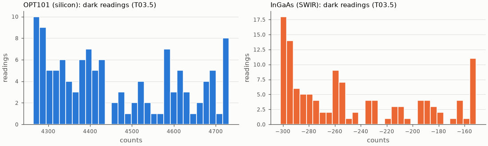
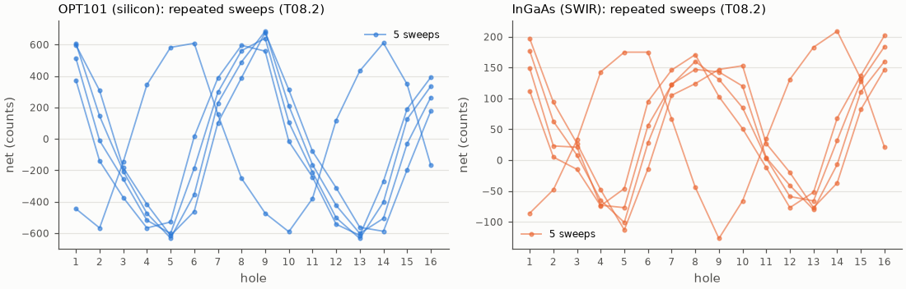

| Sample | none-empty-chamber | Operator | unknown |
|---|---|---|---|
| Firmware | 2.3.1 (proto 1, build 2026-11-10) | Config | 1cce2d7d4c58 (thresholds provisional) |
| Host | macOS-27.0.1-x86_64-i386-64bit, Python 3.12.11 | Software | lio 0.2.0, git 943774d465 (dirty) |
| Results | PASS 24, FAIL 8, SKIP 6 | ||
| LED duty | 0.0 s of cool-down waits; 0 over-budget on-time(s) | ||
| Test | Name | Status | Note |
|---|---|---|---|
| T01.1 | Python and dependency versions | ✓ PASS | |
| T01.2 | Serial port discovery | ✓ PASS | |
| T01.3 | Configuration loads and is self-consistent | ✓ PASS | |
| T02.1 | Port open and boot banner | ✓ PASS | |
| T02.2 | PING round-trip latency | ✓ PASS | |
| T02.3 | INFO fields, versions and safety limits | ✓ PASS | |
| T02.4 | Robustness to bad input | ✓ PASS | |
| T02.5 | Sequence numbers and interleaved events | ✓ PASS | |
| T02.6 | RESET restores the boot state | ✓ PASS | |
| T03.1 | I2C scan finds the ADS1115 | ✓ PASS | |
| T03.2 | Dark ADC noise, all inputs | ✕ FAIL | |
| T03.3 | Gain sweep on dark inputs | ✕ FAIL | |
| T03.4 | ADC data rate | ✓ PASS | |
| T03.5 | Long-term dark stability | ✓ PASS | |
| T04.1 | Shift-register patterns with CE low | ✓ PASS | |
| T04.2 | Shift-register loopback (optional jumper) | - SKIP | loopback jumper not fitted (this build has no loop-back input (pins.LOOP), plan §6.3); the shift registers are verified optically by T05.3 |
| T04.3 | Optical address verification | - SKIP | covered by T05.3 (each hole must light only its own expected response) |
| T05.1 | Rail gating by CE1 / CE2 | ✕ FAIL | |
| T05.2 | Per-channel response | ✕ FAIL | |
| T05.3 | Channel address and isolation | ✕ FAIL | opt101 excluded: opt101 dark signal is erratic (sigma 267 counts) (see T06) |
| T05.4 | Off-state return after each MEAS | ✓ PASS | |
| T05.5 | Repeatability (interleaved MEAS) | ✓ PASS | not judged (net < 1000 counts or detector unusable): 1/opt101, 2/opt101, 3/opt101, 4/opt101, 5/opt101, 6/opt101, 7/opt101, 8/opt101, 8/ingaas, 9/opt101, 9/ingaas, 10/opt101, 11/opt101, 12/ingaas, 13/ingaas, 14/ingaas, 15/ingaas |
| T06.1 | OPT101 | ✕ FAIL | |
| T06.2 | InGaAs TIA | ✕ FAIL | |
| T06.3 | Cross-calibration on the shared holes | - SKIP | opt101 dark signal is erratic (sigma 267 counts) (see T06) |
| T07.1 | Step response and settling time | ✕ FAIL | |
| T07.2 | Recommended settle time | - SKIP | no usable step response (see T07.1) |
| T07.3 | MEAS timing | ✓ PASS | |
| T08.1 | SWEEP completes with a valid schema | ✓ PASS | |
| T08.2 | Repeated sweeps | ✓ PASS | |
| T08.3 | Sweep agrees with MEAS | ✓ PASS | |
| T08.4 | CSV output format | ✓ PASS | |
| T10.1 | Power-up dark state | ✓ PASS | |
| T10.2 | On-time watchdog | - SKIP | |
| T10.3 | Comms-loss failsafe | ✓ PASS | |
| T10.4 | Single-channel invariant | ✓ PASS | |
| T10.5 | Motion disarmed after comms loss | ✓ PASS | |
| T11.1 | Comparison with the baseline | - SKIP | no baseline given (--baseline <file>); save one with --save-baseline |




| Check | Status | Result | Criterion |
|---|---|---|---|
Python versionT01.1/python |
✓ PASS | 3.12.11 | >= 3.10 |
pyserial installedT01.1/pyserial |
✓ PASS | 3.5 | importable |
pyyaml installedT01.1/pyyaml |
✓ PASS | 6.0.3 | importable |
numpy installedT01.1/numpy |
✓ PASS | 2.5.4 | importable |
matplotlib installedT01.1/matplotlib |
✓ PASS | 3.11.2 | importable |
jinja2 installedT01.1/jinja2 |
✓ PASS | 3.1.6 | importable |
| Check | Status | Result | Criterion |
|---|---|---|---|
Selected port is presentT01.2/port |
✓ PASS | /dev/cu.usbmodem1101: present | --lio-port names an existing serial port |
USB-serial chip recognisedT01.2/chip |
✓ PASS | VID:PID 2341:0074 (Arduino Nano R4 (native USB)) | one of link.usb_ids |
| Check | Status | Result | Criterion |
|---|---|---|---|
Config validatesT01.3/load |
✓ PASS | lio_hw_nowake.yaml sha256 1cce2d7d4c58 | |
16 holesT01.3/holes |
✓ PASS | 16 entries | |
Rails split A = 1-9, B = 10-16T01.3/rails |
✓ PASS | A=[1, 2, 3, 4, 5, 6, 7, 8, 9] B=[10, 11, 12, 13, 14, 15, 16] |
| Check | Status | Result | Criterion |
|---|---|---|---|
Boot banner within the timeoutT02.1/banner |
✓ PASS | 0.06 s | <= 3 s |
Banner identifies LIO firmwareT02.1/identity |
✓ PASS | # BOOT name=lio fw=2.3.1 proto=1 build=2026-11-10 adc_ok=1 hw_wdt=0 | name=lio, fw and proto present |
| Check | Status | Result | Criterion |
|---|---|---|---|
Every PING answeredT02.2/answered |
✓ PASS | 100/100 answered | all |
p99 round tripT02.2/p99 |
✓ PASS | median 0.87 ms, p99 0.97 ms, max 1.01 ms | p99 < 50 ms |
| Check | Status | Result | Criterion |
|---|---|---|---|
INFO fields presentT02.3/fields |
✓ PASS | 21 fields | all protocol-1 INFO fields |
Firmware compatible with this host packageT02.3/version |
✓ PASS | fw 2.3.1 proto 1 | >= 2.0.0, proto 1 |
settle_ms matches lio_hw.yamlT02.3/limit/settle_ms |
✓ PASS | 8 | 8 |
wdt_a_ms matches lio_hw.yamlT02.3/limit/wdt_a_ms |
✓ PASS | 2000 | 2000 |
wdt_b_ms matches lio_hw.yamlT02.3/limit/wdt_b_ms |
✓ PASS | 5000 | 5000 |
wdt_a_cap_ms matches lio_hw.yamlT02.3/limit/wdt_a_cap_ms |
✓ PASS | 5000 | 5000 |
wdt_b_cap_ms matches lio_hw.yamlT02.3/limit/wdt_b_cap_ms |
✓ PASS | 10000 | 10000 |
comms_ms matches lio_hw.yamlT02.3/limit/comms_ms |
✓ PASS | 10000 | 10000 |
arm_ms matches lio_hw.yamlT02.3/limit/arm_ms |
✓ PASS | 60000 | 60000 |
step_max matches lio_hw.yamlT02.3/limit/step_max |
✓ PASS | 2048 | 2048 |
jog_max matches lio_hw.yamlT02.3/limit/jog_max |
✓ PASS | 2048 | 2048 |
jog_v_max matches lio_hw.yamlT02.3/limit/jog_v_max |
✓ PASS | 1000 | 1000 |
jog_acc_max matches lio_hw.yamlT02.3/limit/jog_acc_max |
✓ PASS | 1000 | 1000 |
wake_ms_max matches lio_hw.yamlT02.3/limit/wake_ms_max |
✓ PASS | 3000 | 3000 |
ADC address matches lio_hw.yamlT02.3/adc/addr |
✓ PASS | 0x48 | 0x48 |
ADC gain matches lio_hw.yamlT02.3/adc/gain |
✓ PASS | 1 | 1 |
ADC rate matches lio_hw.yamlT02.3/adc/rate |
✓ PASS | 128 | 128 |
| Check | Status | Result | Criterion |
|---|---|---|---|
Unknown commandT02.4/unknown |
✓ PASS | @139 ERR FROBNICATE code=1 msg=unknown command | ERR code=1 |
Bad argumentT02.4/badarg |
✓ PASS | @140 ERR MEAS code=2 msg=usage: MEAS <1-16> [settle_ms] [n] | ERR code=2 |
Missing argumentT02.4/missing |
✓ PASS | @141 ERR CH code=2 msg=usage: CH <1-16> ON [ms] | ERR code=2 |
Line over 64 charactersT02.4/overflow |
✓ PASS | ERR ? code=6 msg=line too long | ERR code=6 |
Garbage bytes, then PINGT02.4/garbage |
✓ PASS | PING OK | PING still answered |
| Check | Status | Result | Criterion |
|---|---|---|---|
@1 echoedT02.5/seq/1 |
✓ PASS | @1 OK PING uptime_ms=416904 | @1 OK PING |
@4242 echoedT02.5/seq/4242 |
✓ PASS | @4242 OK PING uptime_ms=416905 | @4242 OK PING |
@99999 echoedT02.5/seq/99999 |
✓ PASS | @99999 OK PING uptime_ms=416906 | @99999 OK PING |
No @seq, none echoedT02.5/noseq |
✓ PASS | OK PING uptime_ms=416907 | OK PING |
Response found after interleaved eventsT02.5/stream |
✓ PASS | 20 '# S' events then OK | 20 events |
Asynchronous '# OFF' does not desynchroniseT02.5/async |
✓ PASS | 10/10 PINGs matched; 1 timer event(s) seen | all PINGs answered in order, one '# OFF' |
| Check | Status | Result | Criterion |
|---|---|---|---|
Banner after RESETT02.6/banner |
✓ PASS | 0.00 s | <= 3 s |
STATUS shows the safe stateT02.6/safe |
✓ PASS | ch=0 ce1=0 ce2=0 mask=0x0000 armed=0 | ch=0 ce1=0 ce2=0 mask=0 armed=0, motors idle |
Settings back to defaultsT02.6/defaults |
✓ PASS | wdt_a_ms=2000 (was set to 200) | 2000 |
| Check | Status | Result | Criterion |
|---|---|---|---|
ADS1115 at 0x48T03.1/adc |
✓ PASS | found ['0x48'] | 0x48 acknowledges |
I2C lines (SDA, SCL)T03.1/bus |
✓ PASS | lines idle high with pull-ups, not bridged; 0x48 answers at 166.666 kHz | both idle high, rise on external pull-ups, not joined |
No unexpected I2C devicesT03.1/only |
✓ PASS | none | only the ADS1115 |
| Check | Status | Result | Criterion |
|---|---|---|---|
ADS A0 (ingaas) dark noiseT03.2/a0 |
✕ FAIL | mean -225.7, sigma 45.31 counts (n=64) | sigma <= 20 counts |
ADS A1 (opt101) dark noiseT03.2/a1 |
✕ FAIL | mean 4541.8, sigma 267.21 counts (n=64) | sigma <= 20 counts |
ADS A2 (unconnected)T03.2/a2 |
✓ PASS | recorded only: mean 4538.7, sigma 24.84 | floating input |
ADS A3 (unconnected)T03.2/a3 |
✓ PASS | recorded only: mean 2670.6, sigma 26.95 | floating input |
| Check | Status | Result | Criterion |
|---|---|---|---|
opt101 at GAIN 2 agrees with GAIN 1T03.3/opt101/g2 |
✕ FAIL | 271.90 mV vs 565.92 mV | within 104.48 mV |
opt101 at GAIN 4 agrees with GAIN 1T03.3/opt101/g4 |
✕ FAIL | 254.84 mV vs 565.92 mV | within 104.48 mV |
GAIN 2/3 acceptedT03.3/ingaas/g2/3/lsb |
✓ PASS | lsb 0.1875 mV | 0.1875 mV |
GAIN 1 acceptedT03.3/ingaas/g1/lsb |
✓ PASS | lsb 0.125 mV | 0.125 mV |
GAIN 2 acceptedT03.3/ingaas/g2/lsb |
✓ PASS | lsb 0.0625 mV | 0.0625 mV |
GAIN 4 acceptedT03.3/ingaas/g4/lsb |
✓ PASS | lsb 0.03125 mV | 0.03125 mV |
GAIN 8 acceptedT03.3/ingaas/g8/lsb |
✓ PASS | lsb 0.015625 mV | 0.015625 mV |
GAIN 16 acceptedT03.3/ingaas/g16/lsb |
✓ PASS | lsb 0.0078125 mV | 0.0078125 mV |
ingaas at GAIN 2/3 agrees with GAIN 1T03.3/ingaas/g2/3 |
✓ PASS | -28.45 mV vs -27.95 mV | within 22.58 mV |
ingaas at GAIN 1 agrees with GAIN 1T03.3/ingaas/g1 |
✓ PASS | -27.95 mV vs -27.95 mV | within 22.38 mV |
ingaas at GAIN 2 agrees with GAIN 1T03.3/ingaas/g2 |
✓ PASS | -27.66 mV vs -27.95 mV | within 22.56 mV |
ingaas at GAIN 4 agrees with GAIN 1T03.3/ingaas/g4 |
✓ PASS | -27.96 mV vs -27.95 mV | within 22.38 mV |
ingaas at GAIN 8 agrees with GAIN 1T03.3/ingaas/g8 |
✓ PASS | -28.43 mV vs -27.95 mV | within 22.57 mV |
ingaas at GAIN 16 agrees with GAIN 1T03.3/ingaas/g16 |
✓ PASS | -28.68 mV vs -27.95 mV | within 22.48 mV |
GAIN 2/3 acceptedT03.3/opt101/g2/3/lsb |
✓ PASS | lsb 0.1875 mV | 0.1875 mV |
GAIN 1 acceptedT03.3/opt101/g1/lsb |
✓ PASS | lsb 0.125 mV | 0.125 mV |
GAIN 2 acceptedT03.3/opt101/g2/lsb |
✓ PASS | lsb 0.0625 mV | 0.0625 mV |
GAIN 4 acceptedT03.3/opt101/g4/lsb |
✓ PASS | lsb 0.03125 mV | 0.03125 mV |
GAIN 8 acceptedT03.3/opt101/g8/lsb |
✓ PASS | lsb 0.015625 mV | 0.015625 mV |
GAIN 16 acceptedT03.3/opt101/g16/lsb |
✓ PASS | lsb 0.0078125 mV | 0.0078125 mV |
opt101 at GAIN 2/3 agrees with GAIN 1T03.3/opt101/g2/3 |
✓ PASS | 561.23 mV vs 565.92 mV | within 158.80 mV |
opt101 at GAIN 1 agrees with GAIN 1T03.3/opt101/g1 |
✓ PASS | 565.92 mV vs 565.92 mV | within 104.48 mV |
opt101 at GAIN 8T03.3/opt101/g8 |
✓ PASS | 565.9 mV is beyond this gain's +-512 mV range: clipping expected | |
opt101 at GAIN 16T03.3/opt101/g16 |
✓ PASS | 565.9 mV is beyond this gain's +-256 mV range: clipping expected |
| Check | Status | Result | Criterion |
|---|---|---|---|
8 SPS conversion intervalT03.4/r8 |
✓ PASS | 120.751 ms (nominal 125.000 ms, overhead -4.249 ms) | 106.250-145.250 ms |
16 SPS conversion intervalT03.4/r16 |
✓ PASS | 61.188 ms (nominal 62.500 ms, overhead -1.312 ms) | 53.125-73.375 ms |
32 SPS conversion intervalT03.4/r32 |
✓ PASS | 31.239 ms (nominal 31.250 ms, overhead -0.011 ms) | 26.562-37.438 ms |
64 SPS conversion intervalT03.4/r64 |
✓ PASS | 16.435 ms (nominal 15.625 ms, overhead +0.810 ms) | 13.281-19.469 ms |
128 SPS conversion intervalT03.4/r128 |
✓ PASS | 8.865 ms (nominal 7.812 ms, overhead +1.053 ms) | 6.641-10.484 ms |
250 SPS conversion intervalT03.4/r250 |
✓ PASS | 5.289 ms (nominal 4.000 ms, overhead +1.289 ms) | 3.400-6.100 ms |
475 SPS conversion intervalT03.4/r475 |
✓ PASS | 3.343 ms (nominal 2.105 ms, overhead +1.238 ms) | 1.789-3.921 ms |
860 SPS conversion intervalT03.4/r860 |
✓ PASS | 2.542 ms (nominal 1.163 ms, overhead +1.379 ms) | 0.988-2.837 ms |
| Check | Status | Result | Criterion |
|---|---|---|---|
ingaas drift over 60 sT03.5/ingaas |
✓ PASS | -55.5 counts/min (0.169 % FS/min), sigma 50.24 | <= 2 % FS/min |
opt101 drift over 60 sT03.5/opt101 |
✓ PASS | -108.8 counts/min (0.332 % FS/min), sigma 150.86 | <= 2 % FS/min |
| Check | Status | Result | Criterion |
|---|---|---|---|
SR RAW 0x0000T04.1/zero |
✓ PASS | echoed, CE low, detectors dark | mask echoed in reply and STATUS; CE1 = CE2 = 0; detectors at dark |
SR RAW 0xFFFFT04.1/ones |
✓ PASS | echoed, CE low, detectors dark | mask echoed in reply and STATUS; CE1 = CE2 = 0; detectors at dark |
SR RAW 0x0001T04.1/w1/00 |
✓ PASS | echoed, CE low, detectors dark | mask echoed in reply and STATUS; CE1 = CE2 = 0; detectors at dark |
SR RAW 0x0002T04.1/w1/01 |
✓ PASS | echoed, CE low, detectors dark | mask echoed in reply and STATUS; CE1 = CE2 = 0; detectors at dark |
SR RAW 0x0004T04.1/w1/02 |
✓ PASS | echoed, CE low, detectors dark | mask echoed in reply and STATUS; CE1 = CE2 = 0; detectors at dark |
SR RAW 0x0008T04.1/w1/03 |
✓ PASS | echoed, CE low, detectors dark | mask echoed in reply and STATUS; CE1 = CE2 = 0; detectors at dark |
SR RAW 0x0010T04.1/w1/04 |
✓ PASS | echoed, CE low, detectors dark | mask echoed in reply and STATUS; CE1 = CE2 = 0; detectors at dark |
SR RAW 0x0020T04.1/w1/05 |
✓ PASS | echoed, CE low, detectors dark | mask echoed in reply and STATUS; CE1 = CE2 = 0; detectors at dark |
SR RAW 0x0040T04.1/w1/06 |
✓ PASS | echoed, CE low, detectors dark | mask echoed in reply and STATUS; CE1 = CE2 = 0; detectors at dark |
SR RAW 0x0080T04.1/w1/07 |
✓ PASS | echoed, CE low, detectors dark | mask echoed in reply and STATUS; CE1 = CE2 = 0; detectors at dark |
SR RAW 0x0100T04.1/w1/08 |
✓ PASS | echoed, CE low, detectors dark | mask echoed in reply and STATUS; CE1 = CE2 = 0; detectors at dark |
SR RAW 0x0200T04.1/w1/09 |
✓ PASS | echoed, CE low, detectors dark | mask echoed in reply and STATUS; CE1 = CE2 = 0; detectors at dark |
SR RAW 0x0400T04.1/w1/10 |
✓ PASS | echoed, CE low, detectors dark | mask echoed in reply and STATUS; CE1 = CE2 = 0; detectors at dark |
SR RAW 0x0800T04.1/w1/11 |
✓ PASS | echoed, CE low, detectors dark | mask echoed in reply and STATUS; CE1 = CE2 = 0; detectors at dark |
SR RAW 0x1000T04.1/w1/12 |
✓ PASS | echoed, CE low, detectors dark | mask echoed in reply and STATUS; CE1 = CE2 = 0; detectors at dark |
SR RAW 0x2000T04.1/w1/13 |
✓ PASS | echoed, CE low, detectors dark | mask echoed in reply and STATUS; CE1 = CE2 = 0; detectors at dark |
SR RAW 0x4000T04.1/w1/14 |
✓ PASS | echoed, CE low, detectors dark | mask echoed in reply and STATUS; CE1 = CE2 = 0; detectors at dark |
SR RAW 0x8000T04.1/w1/15 |
✓ PASS | echoed, CE low, detectors dark | mask echoed in reply and STATUS; CE1 = CE2 = 0; detectors at dark |
SR RAW 0xFFFET04.1/w0/00 |
✓ PASS | echoed, CE low, detectors dark | mask echoed in reply and STATUS; CE1 = CE2 = 0; detectors at dark |
SR RAW 0xFFFDT04.1/w0/01 |
✓ PASS | echoed, CE low, detectors dark | mask echoed in reply and STATUS; CE1 = CE2 = 0; detectors at dark |
SR RAW 0xFFFBT04.1/w0/02 |
✓ PASS | echoed, CE low, detectors dark | mask echoed in reply and STATUS; CE1 = CE2 = 0; detectors at dark |
SR RAW 0xFFF7T04.1/w0/03 |
✓ PASS | echoed, CE low, detectors dark | mask echoed in reply and STATUS; CE1 = CE2 = 0; detectors at dark |
SR RAW 0xFFEFT04.1/w0/04 |
✓ PASS | echoed, CE low, detectors dark | mask echoed in reply and STATUS; CE1 = CE2 = 0; detectors at dark |
SR RAW 0xFFDFT04.1/w0/05 |
✓ PASS | echoed, CE low, detectors dark | mask echoed in reply and STATUS; CE1 = CE2 = 0; detectors at dark |
SR RAW 0xFFBFT04.1/w0/06 |
✓ PASS | echoed, CE low, detectors dark | mask echoed in reply and STATUS; CE1 = CE2 = 0; detectors at dark |
SR RAW 0xFF7FT04.1/w0/07 |
✓ PASS | echoed, CE low, detectors dark | mask echoed in reply and STATUS; CE1 = CE2 = 0; detectors at dark |
SR RAW 0xFEFFT04.1/w0/08 |
✓ PASS | echoed, CE low, detectors dark | mask echoed in reply and STATUS; CE1 = CE2 = 0; detectors at dark |
SR RAW 0xFDFFT04.1/w0/09 |
✓ PASS | echoed, CE low, detectors dark | mask echoed in reply and STATUS; CE1 = CE2 = 0; detectors at dark |
SR RAW 0xFBFFT04.1/w0/10 |
✓ PASS | echoed, CE low, detectors dark | mask echoed in reply and STATUS; CE1 = CE2 = 0; detectors at dark |
SR RAW 0xF7FFT04.1/w0/11 |
✓ PASS | echoed, CE low, detectors dark | mask echoed in reply and STATUS; CE1 = CE2 = 0; detectors at dark |
SR RAW 0xEFFFT04.1/w0/12 |
✓ PASS | echoed, CE low, detectors dark | mask echoed in reply and STATUS; CE1 = CE2 = 0; detectors at dark |
SR RAW 0xDFFFT04.1/w0/13 |
✓ PASS | echoed, CE low, detectors dark | mask echoed in reply and STATUS; CE1 = CE2 = 0; detectors at dark |
SR RAW 0xBFFFT04.1/w0/14 |
✓ PASS | echoed, CE low, detectors dark | mask echoed in reply and STATUS; CE1 = CE2 = 0; detectors at dark |
SR RAW 0x7FFFT04.1/w0/15 |
✓ PASS | echoed, CE low, detectors dark | mask echoed in reply and STATUS; CE1 = CE2 = 0; detectors at dark |
| Check | Status | Result | Criterion |
|---|---|---|---|
Hole 12 selected, CE2 highT05.1/B/h12/ce_high |
✕ FAIL | ingaas -167; no light: RAIL B driver, CE2 or the LED is dead | light above the detection threshold |
Hole 12 selected, CE2 lowT05.1/B/h12/ce_low |
✓ PASS | ingaas -222 (dark -226) | dark |
Hole 12 with CE1 (wrong rail)T05.1/B/h12/wrong_ce |
✓ PASS | ERR code=3 needs exactly one selected hole on this rail | refused (code 3) |
RAIL A gatingT05.1/A/h08 |
- SKIP | opt101 dark signal is erratic (sigma 267 counts) (see T06) |
| Check | Status | Result | Criterion |
|---|---|---|---|
Hole 8 (850) on ingaasT05.2/h08/ingaas |
✕ FAIL | net +32 (none); expected signal, none seen | expect signal: signal >= 320 |
Hole 9 (940) on ingaasT05.2/h09/ingaas |
✕ FAIL | net +10 (none); expected signal, none seen | expect signal: signal >= 320 |
Hole 12 (1450) on ingaasT05.2/h12/ingaas |
✕ FAIL | net +55 (none); expected signal, none seen | expect signal: signal >= 320 |
Hole 13 (1550) on ingaasT05.2/h13/ingaas |
✕ FAIL | net +71 (none); expected signal, none seen | expect signal: signal >= 320 |
Hole 14 (1650) on ingaasT05.2/h14/ingaas |
✕ FAIL | net +82 (none); expected signal, none seen | expect signal: signal >= 320 |
Hole 15 (1760) on ingaasT05.2/h15/ingaas |
! WARN | net +76 (none); weak channel below the weak threshold | expect weak: signal >= 320 |
Hole 1 (395) on ingaasT05.2/h01/ingaas |
✓ PASS | net +42 (none); no signal, as expected | expect none: signal >= 320 |
Hole 2 (405) on ingaasT05.2/h02/ingaas |
✓ PASS | net +50 (none); no signal, as expected | expect none: signal >= 320 |
Hole 3 (blue) on ingaasT05.2/h03/ingaas |
✓ PASS | net +80 (none); no signal, as expected | expect none: signal >= 320 |
Hole 4 (green) on ingaasT05.2/h04/ingaas |
✓ PASS | net +79 (none); no signal, as expected | expect none: signal >= 320 |
Hole 5 (yellow) on ingaasT05.2/h05/ingaas |
✓ PASS | net +34 (none); no signal, as expected | expect none: signal >= 320 |
Hole 6 (orange) on ingaasT05.2/h06/ingaas |
✓ PASS | net +39 (none); no signal, as expected | expect none: signal >= 320 |
Hole 7 (red) on ingaasT05.2/h07/ingaas |
✓ PASS | net +46 (none); no signal, as expected | expect none: signal >= 320 |
Hole 10 (white) on ingaasT05.2/h10/ingaas |
✓ PASS | net +68 (none); no signal, as expected | expect none: signal >= 320 |
Hole 11 (pink) on ingaasT05.2/h11/ingaas |
✓ PASS | net +57 (none); no signal, as expected | expect none: signal >= 320 |
Hole 16 (1850) on ingaasT05.2/h16/ingaas |
✓ PASS | net +67 (none); no signal, as expected | expect none: signal >= 320 |
Hole 1 (395) on opt101T05.2/h01/opt101 |
- SKIP | opt101 dark signal is erratic (sigma 267 counts) (see T06) | |
Hole 2 (405) on opt101T05.2/h02/opt101 |
- SKIP | opt101 dark signal is erratic (sigma 267 counts) (see T06) | |
Hole 3 (blue) on opt101T05.2/h03/opt101 |
- SKIP | opt101 dark signal is erratic (sigma 267 counts) (see T06) | |
Hole 4 (green) on opt101T05.2/h04/opt101 |
- SKIP | opt101 dark signal is erratic (sigma 267 counts) (see T06) | |
Hole 5 (yellow) on opt101T05.2/h05/opt101 |
- SKIP | opt101 dark signal is erratic (sigma 267 counts) (see T06) | |
Hole 6 (orange) on opt101T05.2/h06/opt101 |
- SKIP | opt101 dark signal is erratic (sigma 267 counts) (see T06) | |
Hole 7 (red) on opt101T05.2/h07/opt101 |
- SKIP | opt101 dark signal is erratic (sigma 267 counts) (see T06) | |
Hole 8 (850) on opt101T05.2/h08/opt101 |
- SKIP | opt101 dark signal is erratic (sigma 267 counts) (see T06) | |
Hole 9 (940) on opt101T05.2/h09/opt101 |
- SKIP | opt101 dark signal is erratic (sigma 267 counts) (see T06) | |
Hole 10 (white) on opt101T05.2/h10/opt101 |
- SKIP | opt101 dark signal is erratic (sigma 267 counts) (see T06) | |
Hole 11 (pink) on opt101T05.2/h11/opt101 |
- SKIP | opt101 dark signal is erratic (sigma 267 counts) (see T06) | |
Hole 12 (1450) on opt101T05.2/h12/opt101 |
- SKIP | opt101 dark signal is erratic (sigma 267 counts) (see T06) | |
Hole 13 (1550) on opt101T05.2/h13/opt101 |
- SKIP | opt101 dark signal is erratic (sigma 267 counts) (see T06) | |
Hole 14 (1650) on opt101T05.2/h14/opt101 |
- SKIP | opt101 dark signal is erratic (sigma 267 counts) (see T06) | |
Hole 15 (1760) on opt101T05.2/h15/opt101 |
- SKIP | opt101 dark signal is erratic (sigma 267 counts) (see T06) | |
Hole 16 (1850) on opt101T05.2/h16/opt101 |
- SKIP | opt101 dark signal is erratic (sigma 267 counts) (see T06) |
| Check | Status | Result | Criterion |
|---|---|---|---|
Hole 8 (850) detector patternT05.3/h08/pattern |
✕ FAIL | no response on ['ingaas']: possible swapped, misrouted or stuck-on channel | expected ['ingaas'] |
Hole 9 (940) detector patternT05.3/h09/pattern |
✕ FAIL | no response on ['ingaas']: possible swapped, misrouted or stuck-on channel | expected ['ingaas'] |
Hole 12 (1450) detector patternT05.3/h12/pattern |
✕ FAIL | no response on ['ingaas']: possible swapped, misrouted or stuck-on channel | expected ['ingaas'] |
Hole 13 (1550) detector patternT05.3/h13/pattern |
✕ FAIL | no response on ['ingaas']: possible swapped, misrouted or stuck-on channel | expected ['ingaas'] |
Hole 14 (1650) detector patternT05.3/h14/pattern |
✕ FAIL | no response on ['ingaas']: possible swapped, misrouted or stuck-on channel | expected ['ingaas'] |
Hole 15 (1760) detector patternT05.3/h15/pattern |
! WARN | no response on ['ingaas']: possible swapped, misrouted or stuck-on channel | expected ['ingaas'] |
Hole 1 (395) detector patternT05.3/h01/pattern |
✓ PASS | seen by nothing as expected | expected none |
Hole 2 (405) detector patternT05.3/h02/pattern |
✓ PASS | seen by nothing as expected | expected none |
Hole 3 (blue) detector patternT05.3/h03/pattern |
✓ PASS | seen by nothing as expected | expected none |
Hole 4 (green) detector patternT05.3/h04/pattern |
✓ PASS | seen by nothing as expected | expected none |
Hole 5 (yellow) detector patternT05.3/h05/pattern |
✓ PASS | seen by nothing as expected | expected none |
Hole 6 (orange) detector patternT05.3/h06/pattern |
✓ PASS | seen by nothing as expected | expected none |
Hole 7 (red) detector patternT05.3/h07/pattern |
✓ PASS | seen by nothing as expected | expected none |
Hole 10 (white) detector patternT05.3/h10/pattern |
✓ PASS | seen by nothing as expected | expected none |
Hole 11 (pink) detector patternT05.3/h11/pattern |
✓ PASS | seen by nothing as expected | expected none |
Hole 16 (1850) detector patternT05.3/h16/pattern |
✓ PASS | seen by nothing as expected | expected none |
Signatures uniqueT05.3/unique |
✓ PASS | no two channels look the same | cosine < 0.98 or amplitude differs by more than 1 % |
| Check | Status | Result | Criterion |
|---|---|---|---|
Hole 1 ingaas back to darkT05.4/h01/ingaas |
✓ PASS | -229.2 after OFF vs dark -217 | within 5 sigma (160.2 counts) |
Hole 2 ingaas back to darkT05.4/h02/ingaas |
✓ PASS | -232.8 after OFF vs dark -226 | within 5 sigma (160.2 counts) |
Hole 3 ingaas back to darkT05.4/h03/ingaas |
✓ PASS | -220.2 after OFF vs dark -235 | within 5 sigma (160.2 counts) |
Hole 4 ingaas back to darkT05.4/h04/ingaas |
✓ PASS | -220.2 after OFF vs dark -231 | within 5 sigma (160.2 counts) |
Hole 5 ingaas back to darkT05.4/h05/ingaas |
✓ PASS | -218.8 after OFF vs dark -221 | within 5 sigma (160.2 counts) |
Hole 6 ingaas back to darkT05.4/h06/ingaas |
✓ PASS | -228.5 after OFF vs dark -219 | within 5 sigma (160.2 counts) |
Hole 7 ingaas back to darkT05.4/h07/ingaas |
✓ PASS | -234.2 after OFF vs dark -228 | within 5 sigma (160.2 counts) |
Hole 8 ingaas back to darkT05.4/h08/ingaas |
✓ PASS | -224.5 after OFF vs dark -230 | within 5 sigma (160.2 counts) |
Hole 9 ingaas back to darkT05.4/h09/ingaas |
✓ PASS | -219.0 after OFF vs dark -231 | within 5 sigma (160.2 counts) |
Hole 10 ingaas back to darkT05.4/h10/ingaas |
✓ PASS | -220.8 after OFF vs dark -222 | within 5 sigma (160.2 counts) |
Hole 11 ingaas back to darkT05.4/h11/ingaas |
✓ PASS | -228.8 after OFF vs dark -219 | within 5 sigma (160.2 counts) |
Hole 12 ingaas back to darkT05.4/h12/ingaas |
✓ PASS | -231.2 after OFF vs dark -223 | within 5 sigma (160.2 counts) |
Hole 13 ingaas back to darkT05.4/h13/ingaas |
✓ PASS | -229.8 after OFF vs dark -230 | within 5 sigma (160.2 counts) |
Hole 14 ingaas back to darkT05.4/h14/ingaas |
✓ PASS | -220.8 after OFF vs dark -236 | within 5 sigma (160.2 counts) |
Hole 15 ingaas back to darkT05.4/h15/ingaas |
✓ PASS | -218.2 after OFF vs dark -226 | within 5 sigma (160.2 counts) |
Hole 16 ingaas back to darkT05.4/h16/ingaas |
✓ PASS | -226.5 after OFF vs dark -222 | within 5 sigma (160.2 counts) |
Hole 1 opt101 back to darkT05.4/h01/opt101 |
- SKIP | opt101 dark signal is erratic (sigma 267 counts) (see T06) | |
Hole 2 opt101 back to darkT05.4/h02/opt101 |
- SKIP | opt101 dark signal is erratic (sigma 267 counts) (see T06) | |
Hole 3 opt101 back to darkT05.4/h03/opt101 |
- SKIP | opt101 dark signal is erratic (sigma 267 counts) (see T06) | |
Hole 4 opt101 back to darkT05.4/h04/opt101 |
- SKIP | opt101 dark signal is erratic (sigma 267 counts) (see T06) | |
Hole 5 opt101 back to darkT05.4/h05/opt101 |
- SKIP | opt101 dark signal is erratic (sigma 267 counts) (see T06) | |
Hole 6 opt101 back to darkT05.4/h06/opt101 |
- SKIP | opt101 dark signal is erratic (sigma 267 counts) (see T06) | |
Hole 7 opt101 back to darkT05.4/h07/opt101 |
- SKIP | opt101 dark signal is erratic (sigma 267 counts) (see T06) | |
Hole 8 opt101 back to darkT05.4/h08/opt101 |
- SKIP | opt101 dark signal is erratic (sigma 267 counts) (see T06) | |
Hole 9 opt101 back to darkT05.4/h09/opt101 |
- SKIP | opt101 dark signal is erratic (sigma 267 counts) (see T06) | |
Hole 10 opt101 back to darkT05.4/h10/opt101 |
- SKIP | opt101 dark signal is erratic (sigma 267 counts) (see T06) | |
Hole 11 opt101 back to darkT05.4/h11/opt101 |
- SKIP | opt101 dark signal is erratic (sigma 267 counts) (see T06) | |
Hole 12 opt101 back to darkT05.4/h12/opt101 |
- SKIP | opt101 dark signal is erratic (sigma 267 counts) (see T06) | |
Hole 13 opt101 back to darkT05.4/h13/opt101 |
- SKIP | opt101 dark signal is erratic (sigma 267 counts) (see T06) | |
Hole 14 opt101 back to darkT05.4/h14/opt101 |
- SKIP | opt101 dark signal is erratic (sigma 267 counts) (see T06) | |
Hole 15 opt101 back to darkT05.4/h15/opt101 |
- SKIP | opt101 dark signal is erratic (sigma 267 counts) (see T06) | |
Hole 16 opt101 back to darkT05.4/h16/opt101 |
- SKIP | opt101 dark signal is erratic (sigma 267 counts) (see T06) |
| Check | Status | Result | Criterion |
|---|---|---|---|
opt101 dark offsetT06.1/dark |
✕ FAIL | 4541.8 counts; check the OPT101 supply and output wiring | 0 to 800 counts |
Not saturatedT06.1/saturation |
✓ PASS | peak 4606 | < 29000 counts |
Responds to hole 1 (395)T06.1/h01/visible |
- SKIP | opt101 dark signal is erratic (sigma 267 counts) (see T06) | |
Responds to hole 2 (405)T06.1/h02/visible |
- SKIP | opt101 dark signal is erratic (sigma 267 counts) (see T06) | |
Responds to hole 3 (blue)T06.1/h03/visible |
- SKIP | opt101 dark signal is erratic (sigma 267 counts) (see T06) | |
Responds to hole 4 (green)T06.1/h04/visible |
- SKIP | opt101 dark signal is erratic (sigma 267 counts) (see T06) | |
Responds to hole 5 (yellow)T06.1/h05/visible |
- SKIP | opt101 dark signal is erratic (sigma 267 counts) (see T06) | |
Responds to hole 6 (orange)T06.1/h06/visible |
- SKIP | opt101 dark signal is erratic (sigma 267 counts) (see T06) | |
Responds to hole 7 (red)T06.1/h07/visible |
- SKIP | opt101 dark signal is erratic (sigma 267 counts) (see T06) | |
Responds to hole 10 (white)T06.1/h10/visible |
- SKIP | opt101 dark signal is erratic (sigma 267 counts) (see T06) | |
Responds to hole 11 (pink)T06.1/h11/visible |
- SKIP | opt101 dark signal is erratic (sigma 267 counts) (see T06) |
| Check | Status | Result | Criterion |
|---|---|---|---|
ingaas dark offsetT06.2/dark |
✕ FAIL | -225.7 counts; check the TIA offset | -100 to 2000 counts |
Dark signal steadyT06.2/erratic |
✓ PASS | dark mean -226, sigma 45.3 | sigma <= 100 and mean >= -1500 |
Polarity gate (hole 8)T06.2/polarity/gate |
✓ PASS | net +35 | net >= -5 sigma |
Hole 9 InGaAs polarityT06.2/h09/polarity |
✓ PASS | net +10 | net not negative |
Hole 12 InGaAs polarityT06.2/h12/polarity |
✓ PASS | net +55 | net not negative |
Hole 13 InGaAs polarityT06.2/h13/polarity |
✓ PASS | net +71 | net not negative |
Hole 14 InGaAs polarityT06.2/h14/polarity |
✓ PASS | net +82 | net not negative |
InGaAs not saturatedT06.2/saturation |
✓ PASS | no hole saturates | < 27000 counts |
| Check | Status | Result | Criterion |
|---|---|---|---|
Hole 13 step responseT07.1/h13 |
✕ FAIL | no step on ingaas (baseline -210, plateau -153) | a step above the detection threshold |
Hole 3 step responseT07.1/h03 |
- SKIP | opt101 dark signal is erratic (sigma 267 counts) (see T06) | |
Hole 8 step responseT07.1/h08 |
- SKIP | opt101 dark signal is erratic (sigma 267 counts) (see T06) |
| Check | Status | Result | Criterion |
|---|---|---|---|
MEAS 3 8 1 on-timeT07.3/s8n1 |
✓ PASS | t_on_ms 25 | 21.3-32.0 ms and <= watchdog 2000 ms |
MEAS 3 20 4 on-timeT07.3/s20n4 |
✓ PASS | t_on_ms 90 | 73.1-106.9 ms and <= watchdog 2000 ms |
| Check | Status | Result | Criterion |
|---|---|---|---|
16 records, holes 1-16 in orderT08.1/records |
✓ PASS | 16 records: [1, 2, 3, 4, 5, 6, 7, 8, 9, 10, 11, 12, 13, 14, 15, 16] | holes 1..16 |
Sweep records parseT08.1/schema |
✓ PASS | all '# M' fields present and integer | |
Sweep durationT08.1/duration |
✓ PASS | 833 ms (host 834 ms) | <= 2.5 s |
| Check | Status | Result | Criterion |
|---|---|---|---|
ingaas dark stable between sweepsT08.2/dark/ingaas |
✓ PASS | per-sweep dark means span 6.12 counts | <= 56.64 counts |
opt101 dark stable between sweepsT08.2/dark/opt101 |
✓ PASS | per-sweep dark means span 30.62 counts | <= 334.01 counts |
| Check | Status | Result | Criterion |
|---|---|---|---|
Hole 12 ingaas sweep vs MEAST08.3/h12/ingaas |
✓ PASS | sweep -13 vs MEAS 55 (124.0 %) | within 215 counts (max of 10 %, 5 sigma) |
Hole 13 ingaas sweep vs MEAST08.3/h13/ingaas |
✓ PASS | sweep -18 vs MEAS 71 (125.9 %) | within 215 counts (max of 10 %, 5 sigma) |
Hole 14 ingaas sweep vs MEAST08.3/h14/ingaas |
✓ PASS | sweep 53 vs MEAS 82 (35.4 %) | within 215 counts (max of 10 %, 5 sigma) |
Hole 15 ingaas sweep vs MEAST08.3/h15/ingaas |
✓ PASS | sweep 118 vs MEAS 76 (55.3 %) | within 215 counts (max of 10 %, 5 sigma) |
| Check | Status | Result | Criterion |
|---|---|---|---|
HeaderT08.4/header |
✓ PASS | hole,label,dark_ingaas,dark_opt101,ingaas,opt101,net_ingaas_V,net_opt101_V | hole,label,dark_ingaas,dark_opt101,ingaas,opt101,net_ingaas_V,net_opt101_V |
One CRLF-terminated row per holeT08.4/rows |
✓ PASS | 16 rows | 16 rows, CRLF |
Rows byte-identical to the original logger's formatT08.4/values |
✓ PASS | all rows identical | same columns, rounding, labels |
| Check | Status | Result | Criterion |
|---|---|---|---|
STATUS safe after RESETT10.1/reset/status |
✓ PASS | ch=0 ce1=0 ce2=0 mask=0x0000 armed=0 | ch=0 ce1=0 ce2=0 mask=0 armed=0, motors idle |
Detectors dark after RESETT10.1/reset/dark |
✓ PASS | ingaas -220, opt101 4543 | dark +- k sigma |
STATUS safe after a port reopenT10.1/reopen/status |
✓ PASS | ch=0 ce1=0 ce2=0 mask=0x0000 armed=0 | ch=0 ce1=0 ce2=0 mask=0 armed=0, motors idle |
Detectors dark after a port reopenT10.1/reopen/dark |
✓ PASS | ingaas -229, opt101 4558 | dark +- k sigma |
| Check | Status | Result | Criterion |
|---|---|---|---|
RAIL A watchdogT10.2/A |
- SKIP | no working channel on RAIL A to observe (see T05.2) | |
RAIL B watchdogT10.2/B |
- SKIP | no working channel on RAIL B to observe (see T05.2) |
| Check | Status | Result | Criterion |
|---|---|---|---|
'# FAILSAFE' after the comms timeoutT10.3/event |
✓ PASS | # FAILSAFE reason=comms idle_ms=10000 | idle_ms 10000-10050 |
Everything off after the failsafeT10.3/status |
✓ PASS | ch=0 ce1=0 ce2=0 mask=0x0000 armed=0 | ch=0 ce1=0 ce2=0 mask=0 armed=0, motors idle |
Failsafe countedT10.3/trips |
✓ PASS | failsafe_trips=1 | >= 1 |
| Check | Status | Result | Criterion |
|---|---|---|---|
SR RAW 0x0000 then CE 1 1T10.4/m0000/ce1 |
✓ PASS | ERR code=3 needs exactly one selected hole on this rail; ce1=0 ce2=0 | refused (code 3), CE stays low |
SR RAW 0x0005 then CE 1 1T10.4/m0005/ce1 |
✓ PASS | ERR code=3 needs exactly one selected hole on this rail; ce1=0 ce2=0 | refused (code 3), CE stays low |
SR RAW 0x0101 then CE 1 1T10.4/m0101/ce1 |
✓ PASS | ERR code=3 needs exactly one selected hole on this rail; ce1=0 ce2=0 | refused (code 3), CE stays low |
SR RAW 0x3000 then CE 2 1T10.4/m3000/ce2 |
✓ PASS | ERR code=3 needs exactly one selected hole on this rail; ce1=0 ce2=0 | refused (code 3), CE stays low |
SR RAW 0x1004 then CE 1 1T10.4/m1004/ce1 |
✓ PASS | ERR code=3 needs exactly one selected hole on this rail; ce1=0 ce2=0 | refused (code 3), CE stays low |
SR RAW 0x1004 then CE 2 1T10.4/m1004/ce2 |
✓ PASS | ERR code=3 needs exactly one selected hole on this rail; ce1=0 ce2=0 | refused (code 3), CE stays low |
| Check | Status | Result | Criterion |
|---|---|---|---|
Armed before the silenceT10.5/before |
✓ PASS | armed=1 | armed=1 |
Disarmed after the failsafeT10.5/after |
✓ PASS | armed=0 armed_ms=0 | armed=0 |